Hi!
I'm
Who Am I?
Hi I'm Ryan Badai Alamsyah, I have a strong background in data analysis, statistical modeling, and machine learning, with proficiency in Python, R, and SQL. My skills encompass the ability to collect, clean, and derive insights from diverse datasets. I am also adept at presenting analysis results through powerful visualization tools like Matplotlib and Seaborn, which helps in making data-driven decisions more comprehensible and impactful.
In addition to my analytical skills, I am well-versed in data engineering tools such as Pentaho, Spark, and Oracle. My strong collaborative abilities enable me to work effectively within teams, and I am committed to continuous learning and professional development. I am dedicated to advancing my expertise in the field of data science, ensuring that I stay at the forefront of technological advancements and industry trends.
Programming
Data Scientist

Data Analyst
Data Engineer
My Skills
I specialize in data analysis, statistical modeling, and machine learning, with proficiency in Python, R, and SQL. My expertise lies in collecting, cleaning, and extracting insights from diverse datasets, and effectively presenting results using visualization tools like Matplotlib and Seaborn. Additionally, I am skilled in data engineering with tools such as Pentaho, Spark, and Oracle. With strong collaborative abilities and a commitment to continuous learning, I am dedicated to advancing my expertise in the field of data science.
Education
Bachelor Degree of Data Science
Universitas Pembangunan Nasional "Veteran" Jawa Timur
- GPA = 3.94 / 4.00
- Learn methods that are most commonly used in Data Science and Machine Learning, such as Regression, Clustering, Neural Networks, etc.
- Learn the tools used in Data Engineering processing, such as Pentaho, Google Big Query, etc.
Senior High School 1 Gedangan
During my high school years, I developed a strong foundation in various disciplines, with a special focus on statistics to prepare for higher education. I studied fundamental concepts and statistical methods, which helped me understand data and perform basic analyses. This learning included understanding data distributions, using charts and tables, and grasping the basics of probability. This knowledge not only prepared me for college but also sparked my interest in the fields of data analysis and machine learning.
Work & Training Experience
Work Experience
Data Center Feasibility Study (Legal & Regulatory)
September 2025 - December 2025
- Conducted a comprehensive regulatory assessment for the Data Center infrastructure at RSUD Dr. Soetomo, evaluating compliance against ISO 27001, Tier-3 standards, and Indonesian privacy laws (UU PDP).
- Developed a strategic compliance roadmap for RSUD Dr. Soetomo by performing a rigorous gap analysis on IT governance and physical security to mitigate legal risks and ensure operational readiness.
.jpg)
.jpg)
.jpg)
.jpg)
Machine Learning Developer at Kementerian Lingkungan Hidup dan Kehutanan
July 2024 - August 2024
- Designed and built a comprehensive dataset for waste classification.
- Developed a computer vision model to accurately identify various waste types.
- Collaborated with the development team to integrate the model into a working Android application.
- Demonstrated the application to a wide audience at the LIKE 2 Festival.
.jpg)
.jpg)
.png)
.jpg)
Back End Developer Internship at PT Jawa Pos Multimedia
September 2022 - December 2022
- Manage a web-based application developed by JTV called Gawedata.
- Fixing bugs that are found in the Gawedata application.
- Collaborate with the team to develop the Gawedata application.
.jpg)
.jpg)
.jpg)
.jpg)
Training Experience
Huawei Certified ICT Associate – Artificial Intelligence
October 2025 - December 2025
- Completed the HCIA-AI learning path, focusing on Machine Learning, Deep Learning, and AI application principles.
- Acquired foundational knowledge of Huawei's AI stack, covering Computer Vision and Natural Language Processing (NLP).
.jpg)
.jpg)
.jpg)
.jpg)
Student Developer Initiative - Classifying & Summarizing Data using IBM Granite
September 2025 - October 2025
- Developed expertise in using IBM Granite to classify data, discover insights, and summarize complex datasets.
- Applied this theoretical knowledge to a real-world project, utilizing IBM Granite for the entire data analysis process, from model development to classification.
.jpg)
.jpg)
.jpg)
.jpg)
PL-300: Microsoft Power BI Data Analyst and Skilvul Innovation Challenge Cycle 2
April 2024 - July 2024
- Mastered Power BI: data preparation, modeling, visualization, analysis, and dashboard deployment and maintenance.
- Developed and deployed Diabetes Vision, a web app using Streamlit for diabetes risk analysis and personalized nutritional recommendations from food photo uploads.
- Designed Power BI dashboards visualizing the nutritional content of foods to aid informed dietary decisions.
- Awarded Best Booth for our outstanding presentation to the jury, effectively showcasing our project and impressing the evaluators during their visit.
.jpg)
.jpg)
.jpg)
.jpg)
Bangkit Academy 2023 Cohort - Machine Learning
February 2023 - July 2023
- Learn more in-depth material about Machine Learning methods, such as TensorFlow, Neural Networks, Time Series, etc.
- Learn to work in teams to complete assigned projects and brainstorm ideas with other team members.
.jpg)
.jpg)
.jpg)
.PNG)
Recent Projects
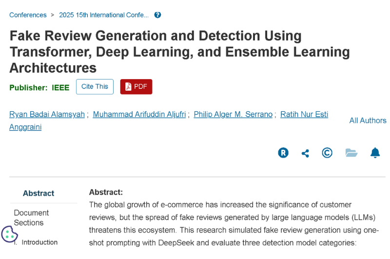
5 Feb 2026 | Publication
Fake Review Generation and Detection Using Transformer, Deep Learning, and Ensemble Learning Architectures
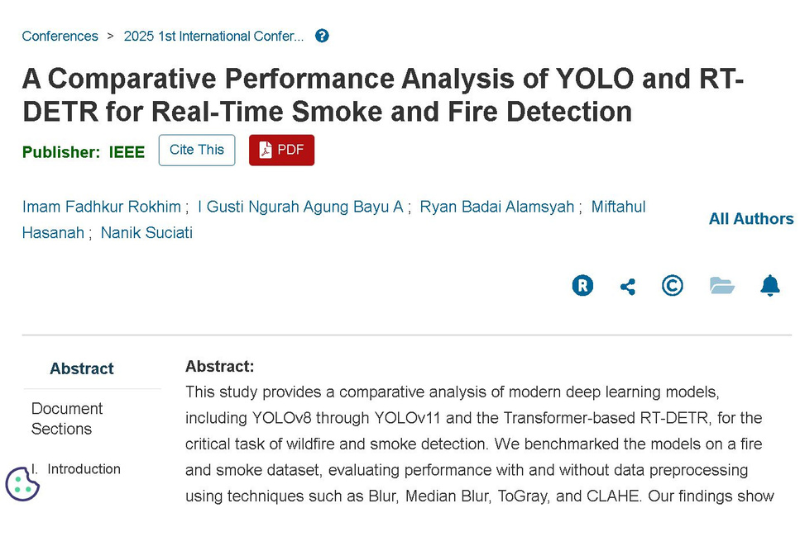
30 Dec 2025 | Publication
A Comparative Performance Analysis of YOLO and RT-DETR for Real-Time Smoke and Fire Detection
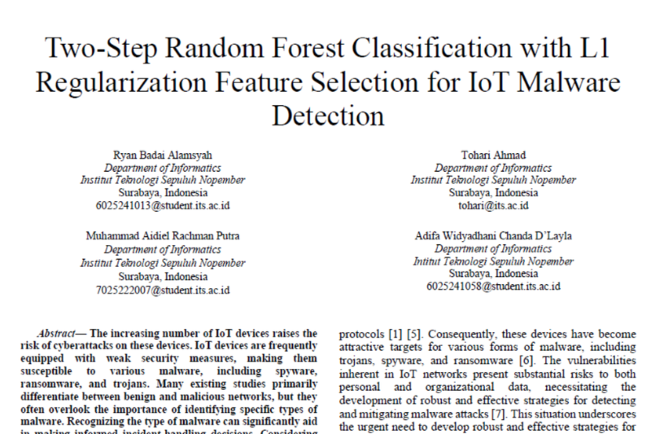
2 April 2025 | Publication
Two-Step Random Forest Classification with L1 Regularization Feature Selection for IoT Malware Detection
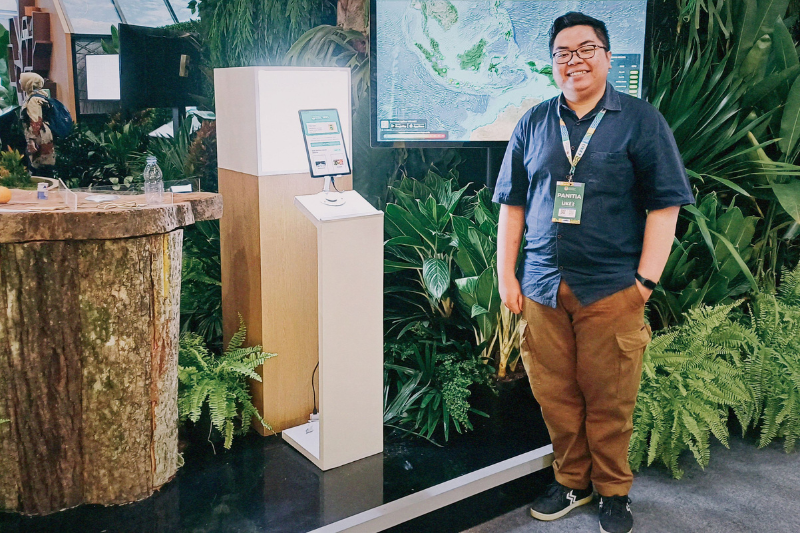
8 August 2024 | Data Scientist
Pilah Bijak: Classify Waste, Secure the Future!
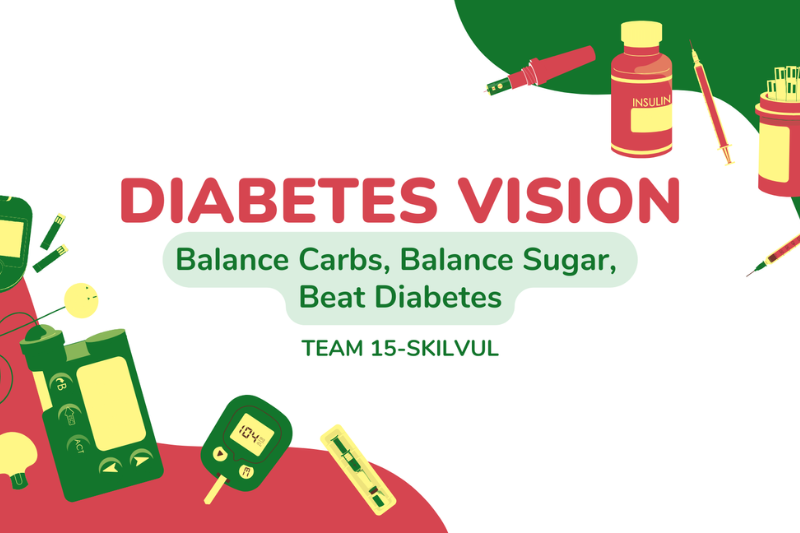
18 July 2024 | Data Analyst
Diabetes-Vision: Balance Carbs, Balance Sugar, Beat Diabetes
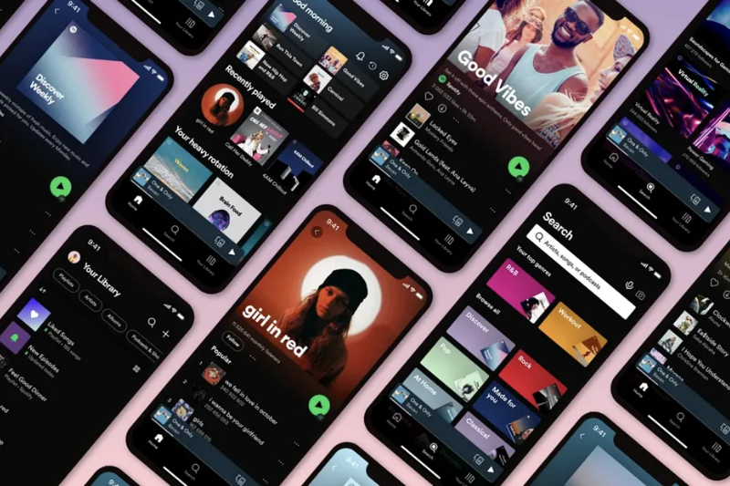
13 June 2024 | Data Scientist
Song Recommended System using Content-Based Filtering with K-Means Clustering
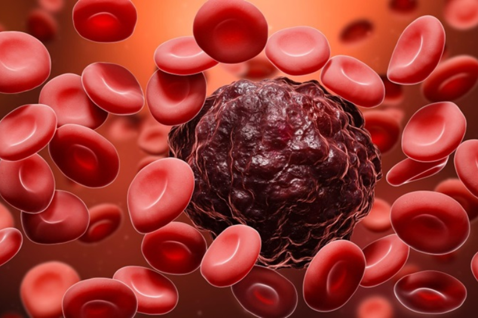
30 May 2024 | Data Analyst
Breast Cancer Prediction with Support Vector Machine (SVM) Method
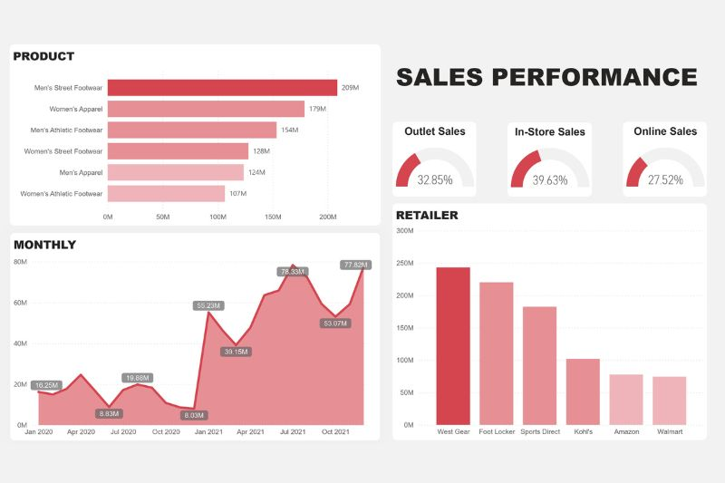
19 May 2024 | Data Analyst
Power BI Dashboard for Sales Performance
5 April 2024 | Data Analyst
House Price Prediction
19 Jan 2024 | Data Scientist
MobileNet-V2 VS Inception-V3 Architecture in Clothing Recognition Case
18 July 2023 | Data Scientist
Pneumonia Classification using CNN Method with InceptionV3 Architecture
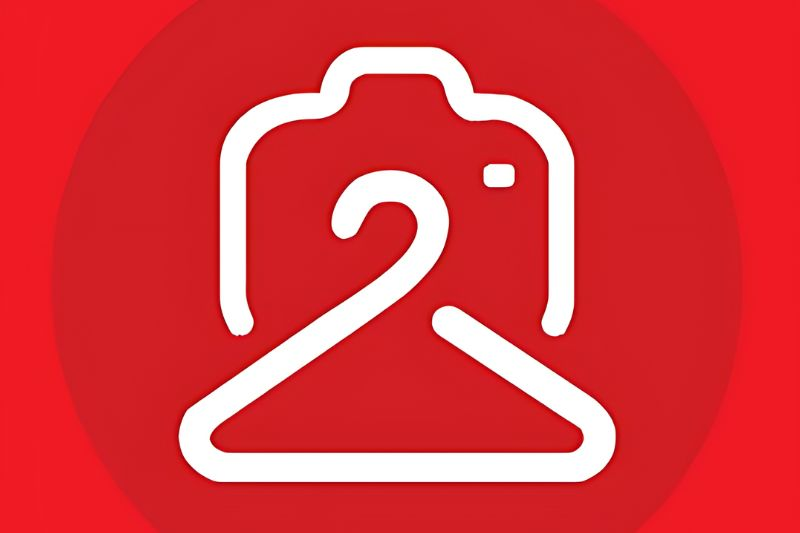
15 June 2023 | Data Scientist
Clothing Recognition for Wearit Project in Bangkit Academy 2023
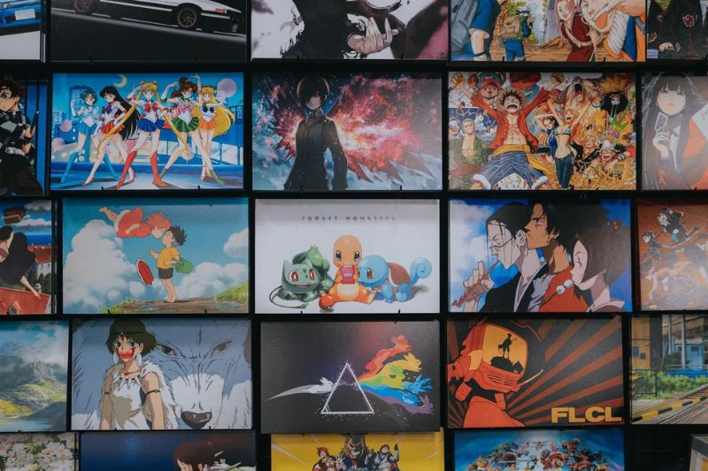
5 Dec 2022 | Data Analyst
Analysis Anime Dataset in Python
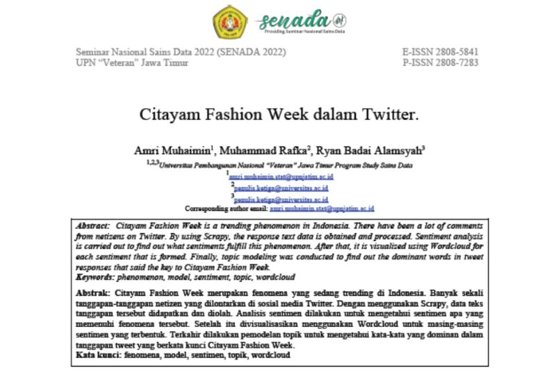
29 Nov 2022 | Publication
Sentiment Analytic in Twitter with Keyword "Citayam Fashion Week"
Contact Me
ryanbadaia11@gmail.com
Location
Sidoarjo, East Java, Indonesia
Phone
(+62)81703542219